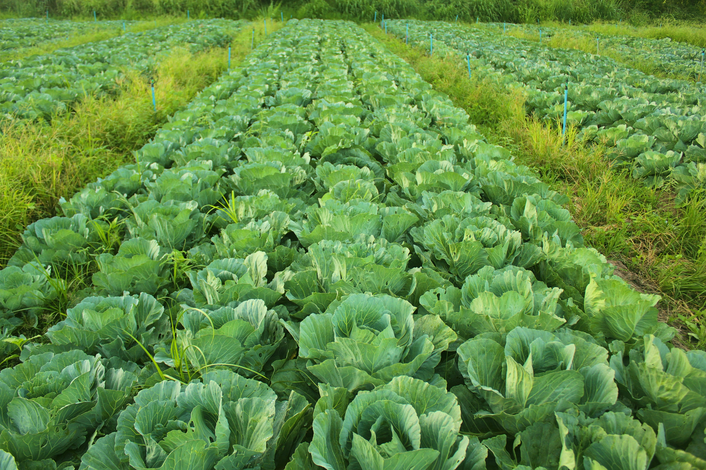

MEIO AMBIENTE E SUSTENTABILIDADE
A sustentabilidade é fundamental para garantir um futuro equilibrado e saudável. Ela envolve o uso
responsável dos recursos naturais, buscando atender às necessidades do presente sem comprometer as gerações
futuras. Para isso, é essencial adotar práticas como o consumo consciente, a economia circular e a
preservação dos ecossistemas.
A poluição, o desmatamento e as mudanças climáticas são desafios globais que exigem ação imediata. Ao
investir em energias renováveis, promover a reciclagem e preservar a biodiversidade, podemos reduzir os
impactos negativos ao meio ambiente.
Cada pequena ação conta. Se todos colaborarmos, poderemos construir um futuro mais sustentável, onde o homem
e a natureza coexistem de maneira equilibrada.

A importância da agricultura sustentavel
A agricultura sustentável é essencial para garantir uma produção de alimentos que atenda às necessidades
atuais sem comprometer as gerações futuras. Ela é importante por vários motivos:
Preservação ambiental: Protege recursos naturais como solo e água, e reduz as emissões de gases de efeito
estufa.
Segurança alimentar: Aumenta a produtividade de forma responsável, garantindo uma oferta estável e
diversificada de alimentos.
Justiça social: Apoia pequenos agricultores e promove condições de trabalho justas.
Saúde humana: Reduz o uso de agrotóxicos e oferece alimentos mais saudáveis.
Resiliência climática: Adapta-se às mudanças climáticas e melhora o uso da água.
Viabilidade econômica: A longo prazo, reduz custos e pode abrir novos mercados para produtos sustentáveis.
Em resumo, a agricultura sustentável promove um sistema alimentar mais equilibrado, eficiente e justo,
fundamental para o futuro do planeta.
